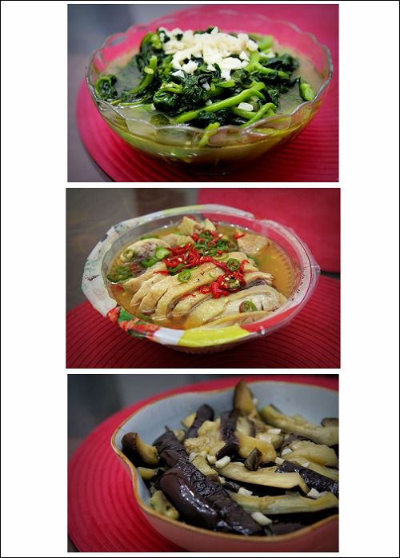

苦中作乐 @ Jul 22, 2009
做可口饭菜不易，尤其在酷暑难耐的夏天。常常从厨房出来浑身是汗，额头滑落的汗珠刺激着眼睛，即使这样在家吃饭总好过外出就餐。然而麻烦总是不断，做多了吃不掉，做少了又增加烧菜的频率，不可避免的倒菜时有发生。看到Maggie的夏日宣言“将冰箱里所有剩食全部倒掉”那段深有同感，不过她在外觅食的经历似乎并不畅快。也许到老爸老妈那里蹭饭是上班族解决问题的最好途径？
周一晚上和David在1912附近的京采餐厅用餐，依然七个碟子八个碗，环境尚好，菜的口味尚好，但那种氛围下熟悉的浮躁却令人不适。下暴雨的时候想回家，外面的浮躁也让人立刻想回家。确信自己有段时间患上焦虑症，近期或许社交恐惧症又找上门来？有没有一种生活可以避开这浮躁而令人焦虑的世界？只要工作就必然要接触各种各样的人和事。即使你呆在家里也会有官司找上门来！况且这世界小丑那么多，避免了A问题还有B问题，大概人生本来就是如此纠结？谁也躲不过？好吧，就让我们一起苦中作乐吧！
中饭烧了两个菜，茄子的口味总没有预期的满意，不过木耳菜始终没令我失望过。配上紫燕的藤椒鸡，夏天的午饭解决了。

17 Responses to “苦中作乐”
2009-07-22
茄子菠菜炒大蒜
2009-07-22
中午还能回家做飯，這是甚麼日子啊。眼紅死我了。我還要睡午覺！
2009-07-22
你还有午觉睡，我也眼红一下下。。。
2009-07-23
嘿嘿，在纪念照系列里面的确留了一张孕期的黑白大肚写真，但是马大可不同意放到博克上。他说不好意思，因为很“色”很“暴力”，两个人看上去都是裸体。奇怪了哦，主意是他的，当时照得时候，他都无所谓，现在反而扮纯情。
南京也是火炉之一，武汉现在是热疯了的。相比南京也差不多。天热人就容易疲惫，精神肉体一起倦怠。能苦中作乐是很重要的本领之一啊。。。
2009-07-23
哇，看上去很好吃啊~~口水。。。
下次烧好吃的喊我上你家吧，30块钱打车也值了。。
2009-07-23
刚准备夸奖那道鸡做得好,就发现是紫燕的,建议你把你的茄子摆的整齐一些,这样配上你的漂亮的碟子,会更显厨房小资味道.赞赏博主的“就让我们一起苦中作乐吧！“至少你名义说:就让我苦中作乐吧.可见你还是时刻记挂着朋友的,所以所谓的焦虑就不用考虑了
2009-07-23
木耳菜我喜欢，茄子要多用蒜末.油备一下，放点酱油和糖，味道重点才好吃，或者可以做成肉末蒸茄子，藤椒鸡没吃过：（，最近很迷宜家的压蒜器，实用又好玩。
2009-07-23
那个压蒜器压过之后，好些蒜末塞住器械的孔，清理起来好麻烦啊~
2009-07-23
还是在家吃饭舒服，躺着吃都可以～
2009-07-23
39度的高温强烈不要让公公再每天送饭菜给我们，现在DIY。早上上班前在附近超市采购蔬菜，下班回来基本半小时可以吃上饭……不过还是很麻烦。
盛茄子的碗很漂亮
2009-07-23
夏天DIY些什么菜吃啊？每天都要想吃什么吃什么啊~
2009-07-23
我觉得还好啊，不多每次要多压几个，压完后，取出带漏空的小勺，直接在龙头下冲洗就OK。我最近做的几个菜是：凉皮拌黄瓜，鸡丝绿豆芽，润腰片，银鱼蒸蛋，辣椒炒菜瓜还加个海带红烧肉~~嘿嘿~~凑合凑合
2009-07-23
好佩服你啊，会做那么多菜，有些菜我是没有勇气尝试的，比如腰片。。。。
有BLOG吗？分享一下你的美味啊~
2009-07-23
今晚菜单：清炒黄豆芽、蒜泥茄子、凉拌黄瓜、醋溜土豆丝、烤鸭（外卖），都是做起来简单的东西哈
2009-07-23
好丰盛啊，一定流了很多汗吧？哈，晚饭我真的去父母家蹭了，顺带回美味若干：D
2009-07-24
藤椒鸡……口水啊……茄子教你一个做法，用肉末和茄子一起蒸，蒸好后放入在超市买的小包的牛肉酱，一拌，好吃的很！
2009-07-24
用各种酱拌菜吃的确很明智，嘿嘿~
Leave A Reply
存档只读，评论已关闭。